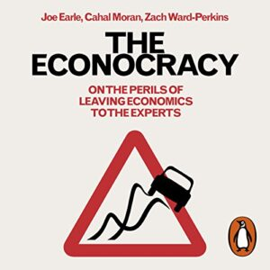

Here is Ross Gittin's talk to ACT Economic Society Annual Dinner, Canberra, given on Thursday 3, 2022I’m very pleased to be invited to talk to you tonight, the biggest and best of the Economic Society’s branches. I should warn you, however, that I’m a follower of the Paddy McGuinness school of public speaking, which holds that it’s no fun talking to a group from any persuasion if you don’t say something to annoy them.
I imagine many of you are econocrats so, before I do, I want to say that I like econocrats. All journalists have “contacts” – people they talk to regularly in their search for stories – or, in my case, for explanations and opinions. In this, the contacts I speak to are overwhelmingly econocrats. I’m too old and proud to speak to ministers’ PR people, and I’ve never been able get much frankness from politicians. I should speak to academic economists more than I do, but these days I get my fill of academia by being an incessant reader of the excellent The Conversation website.
I feel comfortable talking to econocrats, for one main reason: they helped me correct one of the great mistakes of my life. When I was a student at Newcastle Uni in my late teens, I decided that accounting was really interesting, but economics was boring, theoretical rubbish that would be of no use to me in my dream career as a chartered accountant. It wasn’t until I gave up on my accounting career, washed up at the Herald as a graduate cadet, and was advised to become an economic journalist, that I realised I’d got it the wrong way round: it was accounting that was boring, whereas economics was interesting and vitally important in solving the nation’s problems.
My problem was that I’d forgotten most of what I was supposed to have learnt from the three years of economics in my commerce degree. It took me many, many hours on the phone to econocrats in the bureau, the bank, Treasury, the IAC and other agencies to relearn what I was supposed to know. So I’m forever grateful to the econocrats who spent so much of their time helping get me up to speed. I was deeply impressed by their dedication, their selfless desire to educate the public on matters economic by helping educate me. (Now, you may wonder why so many econocrats are willing to speak to me. It’s because they know I’m a columnist, not a reporter. I don’t want to quote them, I want to take those of their opinions I agree with, and make them my own. Opinion writers are in the plagiarism business.)
All this helps explain why I don’t regard myself as an economist, and don’t claim to be one. I used to say I was an accountant pretending to be an economist, but these days I say I’m a journalist who writes about economics. That’s exactly how I see myself, and where my loyalties lie. Because I’m not an economist, I’m not a member of the economists’ union, which means I’m under no fraternal obligation to defend economists and economics against all those terribly ignorant people who keep criticising us and pointing to our failings. I don’t have to believe what everyone in every occupation or industry believes: that if you’re not in our business, no criticism you make of us could possibly have merit.
Being a journalist who writes about economics, my obligation is to my readers. I see my role as similar to a movie critic. I’m an economics critic. I explain what the economists are telling the government to do and why, and then I tell my readers whether I agree with what the economists are saying. To put it more positively, I’ve spent my career trying to figure out how the economy works, then telling my readers what I’ve learnt. This means my views have evolved considerably over the decades. Hopefully, what I say today is closer to the truth than what I used to say.
When top econocrats give a very thoughtful speech about how the economy’s got to its present state, or what we need to do to improve its performance, the press gallery usually riffles through it looking for some particularly newsworthy remark – say, a hint that the cash rate’s about to rise – and then toss it aside. I see it as a big part of my job to rescue the speech from the gallery’s waste-paper basket, and use my column to make sure my readers get the benefit of the top econocrats’ thoughtful explanations and observations. Even when I don’t agree with their policy proposals, I try to give them a fair run before I register my doubts.
Partly because I’m a longstanding exponent of explanatory journalism, I write a lot about economic theory, more than most other economic journalists do. It was many years after I graduated that some economist took the trouble to explain to me the role of theory in our efforts to understand how the world works, to extract some mastery from the seeming chaos around us. About how “models” help us understand the real world by focusing on a few really powerful explanatory variables, and ignoring everything else. The neoclassical model is hugely useful, and hugely powerful in influencing the way economists think about how the economy works – and should work. This is why I keep writing about its assumptions and limitations. I think “behavioural economics” helps ensure our search for a better understanding of how the economy works isn’t held back by those assumptions and limitations.
But my interest in improving on the neoclassical model seems to bring out the defensiveness in academic economists – particularly on Twitter, where what I say is often dismissed as “simply wrong”. But what’s often not understood is that the neoclassical model I care most about is not the one written down in a set of equations, but the one lodged in the heads of econocrats. When I criticise “economists” I’m usually referring to econocrats and other economic practitioners. I care most about what practitioners think and propose because they’re the ones with most influence over policy – the ones with most influence over the economy my readers live in. But academics almost always take “economists” to be referring to them, not to their former students. Their self-absorption is revealing.
I became an economic journalist in 1974, which means I’ve been a professional watcher of the economy – and the econocrats providing economic advice – for almost 50 years. Tonight, I want to reflect on some of the conclusions I’ve reached in that time, the things I’ve learnt, and the way my views have changed. I guess I’ll be accused of being wise after the event, so let me get in first and plead guilty to exactly that. Being wiser after the event isn’t a crime, it’s a virtue. If you don’t learn from your mistakes, you’re not very bright.
When the era of “micro-economic reform” began in the mid-1980s under the influence of “economic rationalism”, I was a strong supporter. Over the 40 years since then, however, I’ve had growing doubts about many of the supposed reforms we’ve made. By now, it’s clear that governments’ enthusiasm for what came to be known as “neo-liberalism” has largely dissipated. Any number of policy changes by Liberal and Labor governments are clearly at odds with the principles of economic rationalism. But it’s not just the politicians who’ve lost their compass. I suspect that many econocrats have lost their John Stone certainty of what’s right and what’s wrong in economic policy.
I think we’re going through a period where econocrats and their fellow travellers are wandering in the wilderness searching for a new program of improvement to be working towards. Economic rationalism 2.0, if you like. Econocrats seem as reluctant as any other profession would be to publicly admit the mixed record of neo-liberalism. But I’m here to say I don’t think econocrats will get their mojo back until they’re willing to admit that many of the things done in the name of micro-economic reform turned out to make matters worse rather than better. We have to learn from our mistakes. I want to propose a couple of principles that should be at the centre of econocrats’ renewed sense of mission.
First, however, we need to think about what went wrong with that great reform push and why. Let’s be clear: the biggest of the reforms were necessary and have worked well: floating the dollar, deregulating the banks, ending import protection, ending centralised wage-fixing and, as Andrew Leigh has reminded us, introducing national competition policy.
The problem has mainly been with privatisation, outsourcing and “contestability” – “reforms” largely motivated by the belief that the provision of services will always be done better by the private sector than the public sector. This is an article of faith for the Liberal Party, but also for too many econocrats. It has succeeded in making the public sector a lot smaller – and very much smaller than it would otherwise have been – but too often this has come at the cost of higher prices (electricity), fewer services and, particularly, lower quality services, delivered by inadequately trained workers. This is true in aged care, child care and employment services. Contracting out to providers in “thin markets” – a Productivity Commission euphemism for pretending there’s a market where none exists - is a big part of the reason for the blowout in the cost of the NDIS. The states’ TAFE systems needed shaking up, but opening up to cherry-picking private providers, plus general cost-cutting, has left us with an utterly inadequate technical education system. Far too many privatisations – particularly in electricity and ports – have involved selling government-owned businesses with pricing power intact, maximising the sale price at the expense of establishing a competitive market.
None of these adverse outcomes were envisaged in the econocrats’ advocacy of these “reforms”. What went wrong when theory was put into practice? One reason is the use of privatisation, and of bureaucrats putting downward pressure contract prices, to reduce “debt and deficit” – which, when you examine it, is about politicians responding to the public’s growing demand for government services, but without asking people to pay for them with higher taxes. This was never going to add up.
But I place some blame on the naivety of our econocrats. They assumed that what works in the textbook would work just as easily in real life. Many econocrats have never worked in the private sector, but are painfully aware of the deficiencies of the public sector. This, plus the neo-classical model’s implicit assumption that markets are rational but governments aren’t, blinded them to the truth that private firms are hugely fallible. Econocrats believed in the profit motive, but didn’t understand its raw, even ruthless power. As we’ve seen from wage theft and the banking royal commission, among other examples, even our biggest, most respectable firms are perfectly capable of breaking the law in their pursuit of profit. Everyone wants to take a bite out of the government. When business people are invited to sell to the government, dollar signs appear in their eyes. They put both hands into the public purse and pull out as much as they can possibly carry away. They think the government’s always an easy touch – and too often they’re right. The bureaucratic regulators of private providers have proved no match for business people on the make.
The biggest reason so many reforms haven’t lived up to their billing, however, is the way the econocrats’ political masters have compromised the economic objectives by adding their own political objectives. Sometimes they’re trying to make the government’s finances look better than they really are. By moving debt off-balance sheet, for instance. But sometimes I suspect that the Liberals, being the party of the private sector, see moving businesses and workers from the public column to the private column as a clear win for their side of politics and loss for their Labor opponents.
There’s much more I could say about the crosses on the economic rationalist report card, but I need to get on with suggesting two key principles I think must be part of any revival of reformist zeal.
First, it’s become an empty cliché to say that policy proposals should be “evidence-based”, but it’s actually our beliefs about how the economy works that need to be more evidence-based. The great advance in academic economics in our time has been the way the information revolution has allowed it to become less theoretical and more empirical. The eternal temptation is to forget that models are just models. They’re not the economy, they’re a cardboard cut-out of the economy. They enlighten us in some circumstances, but mislead us in others. The great project in academia must be to test orthodox theory against the empirical evidence, to see what bits of the theory accurately describe the real world and what bits don’t. The classic example of this is the way empirical evidence has caused economists to change their tune on the role of minimum wages. If there’s one area of the economy where the simple neo-classical model – the one that economists carry in their heads – is an unreliable guide to how the economy works, it’s the labour market. Most econocrats have much to learn from labour economists about how the labour market ticks. Monopsony, for example.
My broader point is that economists who think the neoclassical model they memorised at uni is all they need to give wise advice on policy – whose views on how the economy works haven’t been changed by advances in industrial organisation, asymmetric information, incomplete contracts, behavioural economics and the rest – are setting themselves up for failure. The policies advocated by econocrats have been faith-based rather than empirical-evidence-based.
Second, economic rationalism 2.0 must accept the failure of the smaller-government push. The move to private providers of publicly funded care has not led to any noticeable improvement in the efficiency with which those services are delivered. Where governments have managed to hold down the growing cost of services, this has been achieved by reducing the quantity and particularly the quality of services. Where services have been delivered by for-profit providers, savings from genuine improvements in efficiency have been insufficient to make room for their necessary profit margin. The plain truth is that any savings made by outsourcing services have come simply from side-stepping the good pay rates and conditions of the original workers.
Turning the focus to general government and the budget, the quest for smaller government and its objective, lower taxes, has clearly failed – despite decades of trying. It’s failed because the growth in the public’s demand for more and better government services is inexorable. No government of either colour is prepared to make the big cuts to major spending programs that would make smaller government a reality. Some conservative politicians genuinely believed smaller government was desirable and possible. More of them saw the political attraction of claiming to be pursuing lower taxes while their opponents indulged in “tax and spend”.
Far too many econocrats believed in smaller government and lower taxes as a sure-fire way of increasing economic growth. They focused on the simple theory that taxing any activity always discourages it, while ignoring the absence of empirical evidence that lower company tax leads to increased investment, and lower marginal tax rates encourage work effort. They studiously ignored the evidence that only in the case of secondary earners (mainly mothers) are effective marginal rates likely to affect work effort.
But I think econocrats are guilty of a greater error: their commitment to smaller government – which sort of fits with their day job of using false economies to pare back this year’s embarrassingly high budget deficit – involves pursuing a will-o-the-wisp while ignoring the real challenge. Since big spending on government services is the public’s clearly revealed preference, their job is to use every opportunity to remind the public – not to mention their political masters – that demanding more government spending is fine, provided you’re prepared to pay for it with higher taxes. By omission, econocrats have played along with the delusion that higher taxes are unthinkable – both economically as well as politically – and settled for eternally struggling ineffectively to reduce budget deficits. They should have been doing all they could to stand against the demonisation of taxation for short-term and usually hypocritical political advantage.
Econocrats have spent too long struggling ineffectively to achieve smaller government, while doing little about what should be their real concern: not smaller government, but better government. Government in which the winners from globalisation and other structural change are required through the tax-and-transfer system to compensate the losers. The neglect of fairness toward the losers from micro-economic reform does much to explain why resistance to reform has grown and too many people have become susceptible to populist solutions.
Econocrats need to care more about how, for instance, assistance with housing costs can be more effective and better targeted to those needing it most. Econocrats – and particularly the accountants in Finance – have relied too heavily on crude annual percentage cuts in agencies’ budgets, and too little on building capacity to identify particular areas of waste. It takes no effort or understanding to barrack for small government or big government. What’s hard is knowing how government spending can be efficient and effective. Too often, econocrats have failed to promote and protect spending measures that should be seen as an investment in future cost reduction in return for immediate spending. Too often, the accountants have yielded to the short-term expedient of giving them the chop.
When it comes to regulation, the econocrat profession should be the repository of the nation’s knowledge of what works and what doesn’t, but it’s made little effort to become that. The new government’s commitment to an “evaluator-general” is good news. We need more rigorous evaluation of spending programs, with the results made public. This will always be resisted by ministers and department heads, but that’s all the more reason the econocrats should be unceasing in pushing for it. Academic health economists worked for many years to build the information base that allowed governments to control their spending on public hospitals more effectively than just giving them 5 per cent more than they got last year. Eventually this “activity-based” funding model was adopted as part of the federal-state hospital agreement. To my knowledge, the econocrats did nothing to support this research effort, and were slow to realise its value.
It’s clear from all the discussion of the fiscal position inherited by the new government that we face a choice between bigger government with higher taxes, and a never-ending struggle with “debt and deficit”. Our econocrats should make sure they’re on the right side.